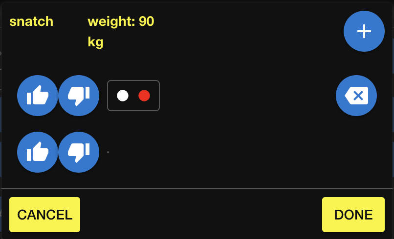

Log your performance
Log your workouts so that you can review them later. You can also enter daily health markers to track trends or relate them to exercise performance. Analytics are provided for both exercise volume and daily health markers so that you can spot trends.
Log a workout
Log the work that you perform for each exercise in the workout. You can either log it as you work out or later if that is more convenient.
These steps for adding a workout are meant to be used to log ad-hoc workouts, or workouts that were not planned as part of a program. Log workouts in this way when you do not intend to follow a program or if you have not yet added a program. If you start a program after you log the ad-hoc workout, you can later link the ad-hoc workout to a planned workout. The link causes the planned workout to be marked as having been completed.
If you are executing a planned workout, you should start the workout from the program so that it is easier to enter the workout information and the planned workout is automatically marked as complete.
Add an exercise:
- At the bottom of the Home page, click Add Event.
The current date and time are set by default. If you are entering a workout you already completed, modify the date and time accordingly. - Select the activity that you are performing.
- Click Add Exercise and then select the exercise you are performing.
To enter weight-based intensity and count-based volume:
-
Enter the intensity at which you are performing the exercise.
-
Click the arrow icon next to the intensity to record the associated volume.
-
In the dialog that opens, enter the volume for the first set:
-
For a count, enter the reps that you performed.
-
If tracking failed reps, enter the result of each rep (fail or success).
-
Click the + icon to add another set, and enter the volume.
 - When all your sets and reps are added, click Done to close the dialog.
- To add volume at another intensity, click the + icon and repeat the previous steps.
To enter heart-rate zone intensities:
- For each heart rate zone, enter the time that you spent in that zone.
To enter rate of perceived exertion (RPE) based volume:
- Enter the RPE level.
- Enter the time or distance, depending on how volume is measured.
- To enter subsequent time or distance at another RPE, click the + icon and repeat the previous steps.
To enter volume based on pace intensities:
- Enter the pace.
- Enter the time or distance, depending on how volume is measured.
- To enter a subsequent time or distance at another pace, click the + icon and repeat the previous steps.
To complete the log entry:
- Add more exercises and configure them as needed.
- (Optional) Specify an Overall Performance value if you want to indicate how you felt during the workout.
- (Optional) Add any notes that you want to mention for later reference.
- Click Save.
Review the log
Each workout that you record appears in the workout log on the home page. Each row represents a workout and shows an overview of what was performed.
Click a row to reveal the details of the workout.
If you need to edit a workout, click the pencil icon. 
Track daily health markers
Log aspects of your daily health to objectively measure factors that might affect your training. For example, a downward trend in your hours of sleep might coincide with a decrease in performance.
The following once-daily measurements can be logged:
- Hours of sleep
- Body weight
- Mood
- Stress level
- Energy level
Mood, stress, and energy are measured on a scale of 0-5.
Additionally, a few items can be logged multiple times in one day:
- Food intake
- Blood pressure
- Blood glucose
All daily stats are optional. Track only the ones that you are interested in.
- On the menu bar, click the hamburger menu.
- Click the item that you want to track.
- Change the date and/or time if necessary. Note that time only matters for blood pressure, blood glucose, and food measurements.
The sleep metric supports decimal numbers.
Weight must be a whole number, and mood, stress, and energy are a scale of 0-5.
Blood glucose supports decimal numbers, and is measured in mmol/L. If you measure values in mg/dL just ignore the mmol/L units label.
For blood pressure, enter the systolic and diastolic values.
For food, you can track nutrition using a general description or measurements for protein, carbs, fat, and fiber, depending on how closely you monitor your intake.